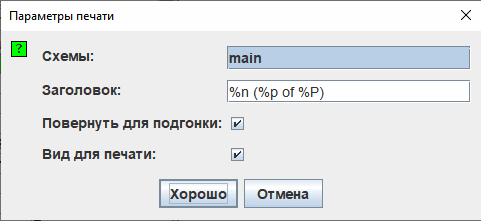

Печать
Когда вы выбираете пункт меню | Файл | → | Печать... |, Logisim открывает диалоговое окно для настройки параметров печати.

Настройки печати
- Схемы: список, в котором вы можете выбрать одну или несколько схем для печати. (Пустые схемы в списке не отображаются). Logisim печатает по одной схеме на странице. Если схема слишком велика, её изображение будет автоматически уменьшено, чтобы уместиться на листе.
-
Заголовок: текст, который будет выводиться по центру в верхней части каждой страницы. В тексте можно использовать следующие макросы:
%n Имя печатаемой схемы %p Номер текущей страницы %P Общее количество страниц %% Символ процента («%») - Повернуть для подгонки: если этот флажок установлен, Logisim будет автоматически поворачивать схему на 90 градусов (в альбомную ориентацию), если она слишком велика для портретной страницы и при повороте её масштаб уменьшится незначительно.
-
Вид для печати: определяет, использовать ли при печати схем специальный «вид для печати» (без сетки и цветного отображения значений).

Этот режим также можно настроить в настройках приложения на вкладке «Макет» (параметр «Вид для печати»). Это изменит стиль отображения схемы непосредственно на холсте в рабочей области.
После нажатия кнопки ОК Logisim отобразит стандартное системное диалоговое окно параметров печати перед тем, как отправить схемы на принтер.